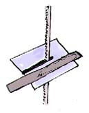
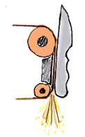
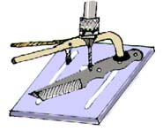
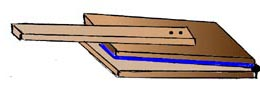
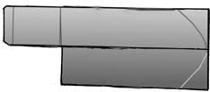
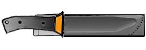
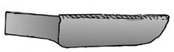

This page contains
my process on how a blade is designed and made from concept & design to a finished blade.
*New Info added
October 2002
*Note: This page is dedicated to
the many knife makers who have helped me out with getting started
in knife making, Thank
You!
I have never been to anyone shop and have been self-taught
for the most part. Allot of excellent tips have come my way free
of charge from better knife makers at gun shows and during my
travels to the Eugene Oregon Knife Show, San Jose California show,
and as a member of the Montana Knife Makers Association. It is
a un-written rule of mine to pass along my knowledge to you as
others have passed their skills and knowledge to me. (It is also
a un-written rule that if you get help from another knife maker,
you don't copy their designs but use the best of what you have
learned to develop your own concepts and design unique to your
own taste).
How a Boyer Blade is
made....
Concept &
Design
My designs are a conceived from various sources, knife
magazines (Knives Illustrated, Blade Magazine, Tactical Knives),
books - Knives 97 annual (DBI publications) and knife newspapers.
I have read about designs of various well known knife makers Bob
Dozier, Dawson Knives, Emerson, etc... For designing the best
suggestion I have is to absorb as much information as possible
and then start drawings of knife shapes on paper or card board.
After I have a good design I transfer it to a light cardboard
and cut out the profile. I then hold the cut out in my hand to
get a good feel of how the blade design will perform. After I
have decided on a design I then transfer it to a sheet of scrap
plastic. (Plastic won't disintegrate when you check the profile
with a wet blade that you are grinding).
Cutting out the
blade
This page contains
my process on how a blade is designed and made from concept & design to a finished blade.
*New Info added
October 2002
*Note: This page is dedicated to
the many knife makers who have helped me out with getting started
in knife making, Thank
You!
I have never been to anyone shop and have been self-taught
for the most part. Allot of excellent tips have come my way free
of charge from better knife makers at gun shows and during my
travels to the Eugene Oregon Knife Show, San Jose California show,
and as a member of the Montana Knife Makers Association. It is
a un-written rule of mine to pass along my knowledge to you as
others have passed their skills and knowledge to me. (It is also
a un-written rule that if you get help from another knife maker,
you don't copy their designs but use the best of what you have
learned to develop your own concepts and design unique to your
own taste).
How a Boyer Blade is
made....
Concept &
Design
My designs are a conceived from various sources, knife
magazines (Knives Illustrated, Blade Magazine, Tactical Knives),
books - Knives 97 annual (DBI publications) and knife newspapers.
I have read about designs of various well known knife makers Bob
Dozier, Dawson Knives, Emerson, etc... For designing the best
suggestion I have is to absorb as much information as possible
and then start drawings of knife shapes on paper or card board.
After I have a good design I transfer it to a light cardboard
and cut out the profile. I then hold the cut out in my hand to
get a good feel of how the blade design will perform. After I
have decided on a design I then transfer it to a sheet of scrap
plastic. (Plastic won't disintegrate when you check the profile
with a wet blade that you are grinding).
Cutting out the
blade

I use a small metal cutting band saw. You can use a
wood band saw but, you'll have to slow the blade down so that
it cuts at a slower rate. The only blades that work for me are,
14 tpi Bi-metal. 18 tpi is too small and 10 tpi pops the blade
off when you catch the edge. Speed is important, I use the fastest
speed that the METAL cutting bandsaw will cut (250 fpm) and then
spray a water soluble coolant on the cut, wear gloves and eye
protection and work the metal slowly along, when you get near
the end of the steel, use a push stick to finish the cut.
Profiling the
blade

Next comes grinding the profile, I use a pre-used 60
grit belt on my Wilton Square Wheel with the flat platen and shape
the profile of the blade to the plastic model.
Grinding the
edge
 Now the blade begins to take shape. I put a 8"
wheel on my grinder and attach my hollow grinding jig.
(Note* Some knife makers have
turned up their noses to me for using a grinding rig to hold the
blades while grinding and not hand holding the blade. I originally
hand held my blades but switched to a more powerful grinder (I
purchased it from Sheffield Knife Supply). David Boye uses a similar
rig as other well known knife makers. The hollow grinding attachment
works well for me and besides, I don't see them hand holding steel
while drilling on a drill press.)
I mark the edge down the center and proceed to hollow
grind the edge. Working slowly I grind both the left and then
the right working the grind down to a 1/32 before switching to
a 120 grit belt. The top of the grind and the start of the grind
will clean up with each finer grit. Next is a 320 grit for the
final finish of the blade. I leave at least 1/64 thickness so
as to not burn off the edge during heat treating process.
A note on grinders, I received my used grinder from
an excellent knife maker Cactus Hollenback in Spokane Washington
and thank him for a great deal on it. Grizzly imports in Bellingham
Washington sells a good grinder, Burrking and other pro grinders
are excellent too, I was lucky to come across a great deal on
a Wilton Square Wheel. I also use a 4 x 36 and a 1x42 belt grinder
for flat and tip work.
Drilling the
holes
Now the blade begins to take shape. I put a 8"
wheel on my grinder and attach my hollow grinding jig.
(Note* Some knife makers have
turned up their noses to me for using a grinding rig to hold the
blades while grinding and not hand holding the blade. I originally
hand held my blades but switched to a more powerful grinder (I
purchased it from Sheffield Knife Supply). David Boye uses a similar
rig as other well known knife makers. The hollow grinding attachment
works well for me and besides, I don't see them hand holding steel
while drilling on a drill press.)
I mark the edge down the center and proceed to hollow
grind the edge. Working slowly I grind both the left and then
the right working the grind down to a 1/32 before switching to
a 120 grit belt. The top of the grind and the start of the grind
will clean up with each finer grit. Next is a 320 grit for the
final finish of the blade. I leave at least 1/64 thickness so
as to not burn off the edge during heat treating process.
A note on grinders, I received my used grinder from
an excellent knife maker Cactus Hollenback in Spokane Washington
and thank him for a great deal on it. Grizzly imports in Bellingham
Washington sells a good grinder, Burrking and other pro grinders
are excellent too, I was lucky to come across a great deal on
a Wilton Square Wheel. I also use a 4 x 36 and a 1x42 belt grinder
for flat and tip work.
Drilling the
holes

I use a small table top drill press from Sears. A vise
or a clamp to hold the metal blade is REALLY important, I have
a scar from a spinning blade when the drill bit cut through the
bottom of the blade. A water coolant in a spray bottle cools the
bit as it cuts. Start with a small hole and work up to a larger
bit in stages. I have also discovered a drill bit sharpening rig
at the tool store and it has saved me tons of money on new bits,
I spent $30 on it and it attaches to a hand drill. Use better
drill bits like the more expensive cobalt drill bits, they won't
wear out as fast.
Finishing the
flats
My steel comes with a rough finish and I use a 4x36
Sears belt sander to grind the sides. Starting with a 60 grit
and moving from 120 to a 320 grit. As with all belt sanders a
gentle touch is important, if a belt is new it can gouge fling
a blade across the shop, so be careful.
The logo
As knife collectors know identifying the product is
important. I have used etching machines and found they work great
on polished blades but, when I bead blast and the darken them
with black blue the logo disappears. I now use a steel logo stamp
ordered from a Las Vegas company. It requires a shop hydraulic
press. Putting the blade, 6" stamp and 12 tons of pressure
together will give a deep stamp on the un-hardened blade.
Hardening the
blade
 Electric, coal and gas are the three main sources of
hardening heat. Electric is expensive but necessary for complex
steels like stainless, coal is dirty but good for hammer and forge
work. I prefer a propane gas fired farriers forge. I purchased
it used for $400 from a farriers supply and it heats fast! The
small size limits me to 12" blades but for edge hardening
my blades, it works fine. After heating my quench oil to 100 degrees,
I start to heat my blade, rotating it to prevent a heat warp.
A magnet is attached near the forge opening to check the blade's
reach to a non-magnetic heat level at 1400 degrees. When the blade
reaches non-magnetic, I quench it edge first into the oil until
it stops bubbling. (I use the edge quench - quenching the blade
edge and leaving the back side out gives the blade a duel hardness
similar to the Japanese shallow water quench) Keep a lid to smother
the oil fire handy.
Testing the hardness
I wish I could afford a Rockwell tester but, my method
works just as good and doesn't cost $3000. After cleaning the
oil off with a rag I clamp the hardened blade in a shop vise and
try to file the hardened edge. If you have properly heat treated
the blade, the file will skate off the hard edge but bite into
the unhardened edge. ( I have used a Rockwell tester to verify
this method and find the process very accurate)
Tempering the
blade
After you have hardened the blade you must quickly
temper it. That is bringing the hardness down to the point where
the brittleness is removed, and yet the blade is sufficiently
hard and stabilized (you will take a chance of ruining the blade
if this isn't done in a timely manner). I use my kitchen oven
(I can do this since I am a single bachelor), I clean the oil
off and preheat the oven to the temp of 390 degrees and bake the
blade for 2 hours - test your steel and get a specs sheet from
your steel company for proper hardening and annealing (that's
why I use only steel that I exactly know is and refrain from using
scrap saw blades or automotive springs). After 2 hours you should
have a completely hardened and tempered knife blade.
Removable handles
For a Powder coated knife I design the handle to be
detachable so the knife can be re-coated. 1095 is very susceptible
to rusting and in my search for a better product I have discovered
Powder coating. Easily to apply and very tough. It is baked on
at 400 degrees for 20 mins and most handle material won't stand
up to re-coating the blade (i offer free re-coating for all powder
coating if the customer wears off the coating through use.)
Foundry Cast
Aluminum Handles
After months of research I have re-discovered the lost
art of sand casting. I spoke with Eight Dollar Mountain Foundry
and they cast large Bowies and Smatchets using sand casts and
molten aluminum. I have always wanted to produce a solid metal
knife after seeing a Gerber Mark 1 which has a solid cast handle.
The first step is to make a mold out of some scrap
bar stock and wood. This will be used to mold the cavity that
the aluminum will be poured into. Next you need a casting box
called a "Cope & Drag". this is a box split in the
middle with indexing pins on two ends. Special foundry sand is
rammed into the bottom half of the box until level. The mold is
pressed in to the level sand half way. A Sprue made of a broom
handle is set into the sand next to the handle's widest section
(this is for the molten aluminum to flow down into the mold).
Parting powder is dusted onto the mold and the second top half
of the box is placed on the top indexing into the pins. Sand then
is the packed or rammed in the top half of the box (I have put
some channel aluminum into the box around the inside so the sand
doesn't fall out.) When the sand mold is rammed tight the top
is lifted carefully off and the handle mold removed. I then place
the pre-hardened knife blank into the mold casing and clean any
errant loose sand. The last thing to do before closing the mold
is to cut a path from the sprue hole to the handle cast to form
a path for the molten metal to flow. I carefully close the sand
mold and prepare to melt some metal.
I purchased a special ladle from Cenur Forge Supply
that is cast iron and has a bottom pour feature like a coffee
pot. I heat the ladle up to 1300 degrees then add scrap aluminum
until I get the molten quality nessasary. Before pouring I need
to degass the melt and flux. Degasing the molten metal removes
any hydrogen trapped into the metal. Gas in the metal is evident
when poured and cooled you notice tiny holes in the casting. Flux
is added so that any impurities float to the top and you get a
clean pour. I have a good way to add both to the melt,using aluminum
foil folded with flux and degass attached to a wire. I press the
foil packet to the bottom of the melt.
Next is the pour... I carefully pour the molten metal
into the sprue hole and let it cool before extracting my finished
handle. all that is left is to cut the sprue off and a finish
grind of the handle. Powder coating the knife and I also use a
new product called Clem-coat on the handle (a new non-slip coating
that is a powder applied and heat set product). The finish is
half between sand paper and a rubber coating... and I am the first
to use it.
Older solid pin
handles
Next comes the time to decide on handle material and
attaching it. I like Micarta or a hard wood for my handles, with
a small shop drill press I drill my first hole then use a hole-size
pin to peg it and then move on to the next rivet hole. After one
side is finished I use the pins to transfer the holes to the other
handle slab. The front of the handle curves
next to the tang must be finished and sanded, before epoxying
as it will be impossible to sand it after the handles are attached.
With a sand blast cabinet (Harbor freight tools) I blast the handle
and pins to clean the black oil deposits from the hardening process.
Epoxy is mixed as I attach my handles and pins to the blade, tightening
the pins I use two C-clamps to hold it all together (don't use
too much pressure as this will push out the epoxy or warp the
handle scales). WD-40 is used to clean up around the front of
the handle scales from where you pre sanded the curves to remove
any epoxy residue.
The final finish
After a day for the epoxy to harden, I start the final
grind. I first start on the profile of the knife working the excess
handle material down with a worn 60 grit belt. Next I start on
the handle sides working the handles and pins down to a final
shape. I leave a small unfinished portion so when I move to the
next grit I haven't ground too close to the blade tang (it's better
to not grind enough then to grind too much). I start with 60 grit
then to a 120 grit and then the bead blast cabinet. Finally ato
400 grit finish. With gloved hands I apply a black blueing solution,
this gives a deep dark finish and is easily re-blued by the consumer
as it wears. The last 3 steps are, naturalizing the blue with
a baking soda and water solution, sharpening the knife, and applying
a gun oil finish to the blade.
Kydex Sheaths
I have been working with Kydex for the last 6 years
and now and have found the following tips to be helpful:
#1 I like to use the thicker Kydex rather than the
thinner stuff. I use the thinner stuff for my neck knives but
it wears out on the larger standard size knives
Electric, coal and gas are the three main sources of
hardening heat. Electric is expensive but necessary for complex
steels like stainless, coal is dirty but good for hammer and forge
work. I prefer a propane gas fired farriers forge. I purchased
it used for $400 from a farriers supply and it heats fast! The
small size limits me to 12" blades but for edge hardening
my blades, it works fine. After heating my quench oil to 100 degrees,
I start to heat my blade, rotating it to prevent a heat warp.
A magnet is attached near the forge opening to check the blade's
reach to a non-magnetic heat level at 1400 degrees. When the blade
reaches non-magnetic, I quench it edge first into the oil until
it stops bubbling. (I use the edge quench - quenching the blade
edge and leaving the back side out gives the blade a duel hardness
similar to the Japanese shallow water quench) Keep a lid to smother
the oil fire handy.
Testing the hardness
I wish I could afford a Rockwell tester but, my method
works just as good and doesn't cost $3000. After cleaning the
oil off with a rag I clamp the hardened blade in a shop vise and
try to file the hardened edge. If you have properly heat treated
the blade, the file will skate off the hard edge but bite into
the unhardened edge. ( I have used a Rockwell tester to verify
this method and find the process very accurate)
Tempering the
blade
After you have hardened the blade you must quickly
temper it. That is bringing the hardness down to the point where
the brittleness is removed, and yet the blade is sufficiently
hard and stabilized (you will take a chance of ruining the blade
if this isn't done in a timely manner). I use my kitchen oven
(I can do this since I am a single bachelor), I clean the oil
off and preheat the oven to the temp of 390 degrees and bake the
blade for 2 hours - test your steel and get a specs sheet from
your steel company for proper hardening and annealing (that's
why I use only steel that I exactly know is and refrain from using
scrap saw blades or automotive springs). After 2 hours you should
have a completely hardened and tempered knife blade.
Removable handles
For a Powder coated knife I design the handle to be
detachable so the knife can be re-coated. 1095 is very susceptible
to rusting and in my search for a better product I have discovered
Powder coating. Easily to apply and very tough. It is baked on
at 400 degrees for 20 mins and most handle material won't stand
up to re-coating the blade (i offer free re-coating for all powder
coating if the customer wears off the coating through use.)
Foundry Cast
Aluminum Handles
After months of research I have re-discovered the lost
art of sand casting. I spoke with Eight Dollar Mountain Foundry
and they cast large Bowies and Smatchets using sand casts and
molten aluminum. I have always wanted to produce a solid metal
knife after seeing a Gerber Mark 1 which has a solid cast handle.
The first step is to make a mold out of some scrap
bar stock and wood. This will be used to mold the cavity that
the aluminum will be poured into. Next you need a casting box
called a "Cope & Drag". this is a box split in the
middle with indexing pins on two ends. Special foundry sand is
rammed into the bottom half of the box until level. The mold is
pressed in to the level sand half way. A Sprue made of a broom
handle is set into the sand next to the handle's widest section
(this is for the molten aluminum to flow down into the mold).
Parting powder is dusted onto the mold and the second top half
of the box is placed on the top indexing into the pins. Sand then
is the packed or rammed in the top half of the box (I have put
some channel aluminum into the box around the inside so the sand
doesn't fall out.) When the sand mold is rammed tight the top
is lifted carefully off and the handle mold removed. I then place
the pre-hardened knife blank into the mold casing and clean any
errant loose sand. The last thing to do before closing the mold
is to cut a path from the sprue hole to the handle cast to form
a path for the molten metal to flow. I carefully close the sand
mold and prepare to melt some metal.
I purchased a special ladle from Cenur Forge Supply
that is cast iron and has a bottom pour feature like a coffee
pot. I heat the ladle up to 1300 degrees then add scrap aluminum
until I get the molten quality nessasary. Before pouring I need
to degass the melt and flux. Degasing the molten metal removes
any hydrogen trapped into the metal. Gas in the metal is evident
when poured and cooled you notice tiny holes in the casting. Flux
is added so that any impurities float to the top and you get a
clean pour. I have a good way to add both to the melt,using aluminum
foil folded with flux and degass attached to a wire. I press the
foil packet to the bottom of the melt.
Next is the pour... I carefully pour the molten metal
into the sprue hole and let it cool before extracting my finished
handle. all that is left is to cut the sprue off and a finish
grind of the handle. Powder coating the knife and I also use a
new product called Clem-coat on the handle (a new non-slip coating
that is a powder applied and heat set product). The finish is
half between sand paper and a rubber coating... and I am the first
to use it.
Older solid pin
handles
Next comes the time to decide on handle material and
attaching it. I like Micarta or a hard wood for my handles, with
a small shop drill press I drill my first hole then use a hole-size
pin to peg it and then move on to the next rivet hole. After one
side is finished I use the pins to transfer the holes to the other
handle slab. The front of the handle curves
next to the tang must be finished and sanded, before epoxying
as it will be impossible to sand it after the handles are attached.
With a sand blast cabinet (Harbor freight tools) I blast the handle
and pins to clean the black oil deposits from the hardening process.
Epoxy is mixed as I attach my handles and pins to the blade, tightening
the pins I use two C-clamps to hold it all together (don't use
too much pressure as this will push out the epoxy or warp the
handle scales). WD-40 is used to clean up around the front of
the handle scales from where you pre sanded the curves to remove
any epoxy residue.
The final finish
After a day for the epoxy to harden, I start the final
grind. I first start on the profile of the knife working the excess
handle material down with a worn 60 grit belt. Next I start on
the handle sides working the handles and pins down to a final
shape. I leave a small unfinished portion so when I move to the
next grit I haven't ground too close to the blade tang (it's better
to not grind enough then to grind too much). I start with 60 grit
then to a 120 grit and then the bead blast cabinet. Finally ato
400 grit finish. With gloved hands I apply a black blueing solution,
this gives a deep dark finish and is easily re-blued by the consumer
as it wears. The last 3 steps are, naturalizing the blue with
a baking soda and water solution, sharpening the knife, and applying
a gun oil finish to the blade.
Kydex Sheaths
I have been working with Kydex for the last 6 years
and now and have found the following tips to be helpful:
#1 I like to use the thicker Kydex rather than the
thinner stuff. I use the thinner stuff for my neck knives but
it wears out on the larger standard size knives

#2 Make a press out of 2 sheets of plywood a bit larger
than the sheath and some neoprene rubber (I use wet suit material).
make a sandwich and glue the rubber on the top slab, use a hinge
on the back and make a handle for leverage. When you press the
hot kydex the rubber pressing down from the top will mold to the
outline of the knife and the back of the sheath will be flat.
 #3 Wrap the knife with a paper towel and then some
masking tape. When you mold the knife the kydex will mold too
tight so you need to create some space.
#3 Wrap the knife with a paper towel and then some
masking tape. When you mold the knife the kydex will mold too
tight so you need to create some space.

#4 Wear cotton gloves when you heat the Kydex, you
won't burn your hands and can shield pre molded kydex to re heat
another section to correct any mistakes and to form the belt loop.

#5 Don't use a oven as it will be harder to work with.
I use a heat gun and cotton gloves, heat the sheath and form the
bend, let it cool. Reheat just the side you want to mold the out
line on and place the wrapped knife. Press down with the press
letting the rubber mold the soft Kydex.

#6 When I mold my sheaths I leave the belt loop un-folded
and clean up the sheath edges with a band saw, belt sander, a
scotch brite buffing wheel to finish or some sand paper.
 #7 I use a scrap hunk of steel blank to mold the belt
loop that has been previously had the edges finished. The last
thing I do is drill my holes for the rivets and use acetone to
clean up the edges. I don't use glue or pop rivets, I like eyelets
so that you can run tiedown cords or Chicago screws so that the
sheath can be disassembled a wedge put in and sprayed out to clean.
I am working this
Winter of 2002/2003 on a air powered kydex press. I will post
photos of the project with a shopping list for the items later.
Home / Knives /Articles / Knife
Design / Knife
Making
#7 I use a scrap hunk of steel blank to mold the belt
loop that has been previously had the edges finished. The last
thing I do is drill my holes for the rivets and use acetone to
clean up the edges. I don't use glue or pop rivets, I like eyelets
so that you can run tiedown cords or Chicago screws so that the
sheath can be disassembled a wedge put in and sprayed out to clean.
I am working this
Winter of 2002/2003 on a air powered kydex press. I will post
photos of the project with a shopping list for the items later.
Home / Knives /Articles / Knife
Design / Knife
Making